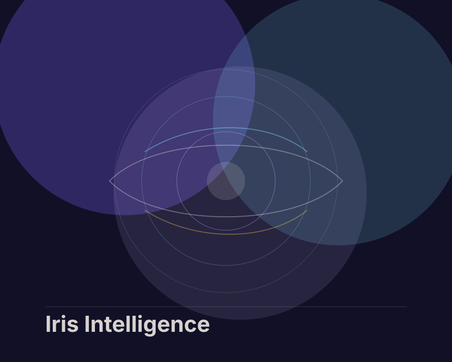
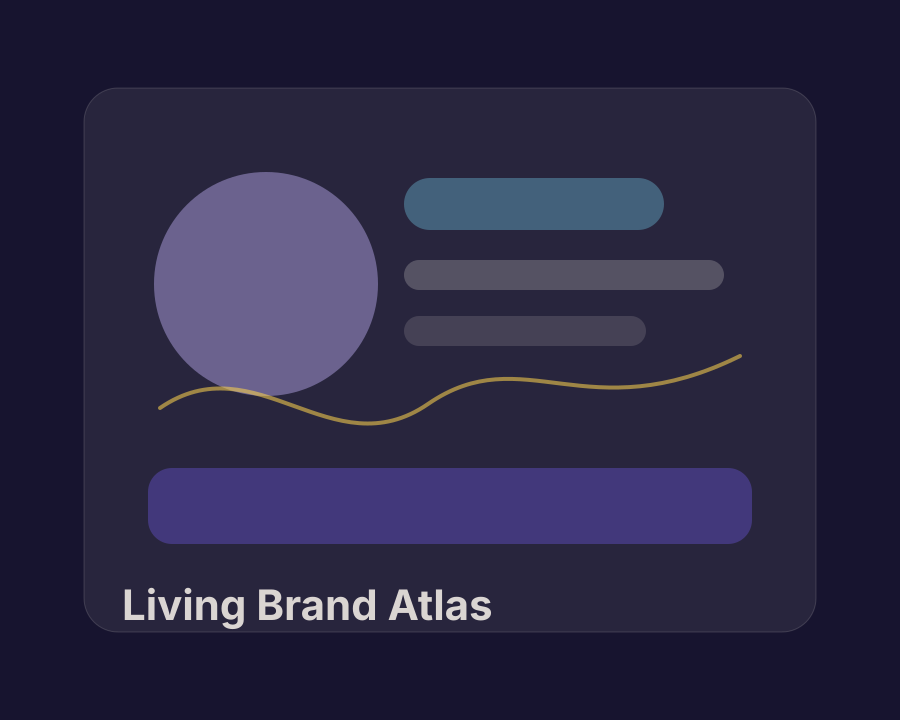
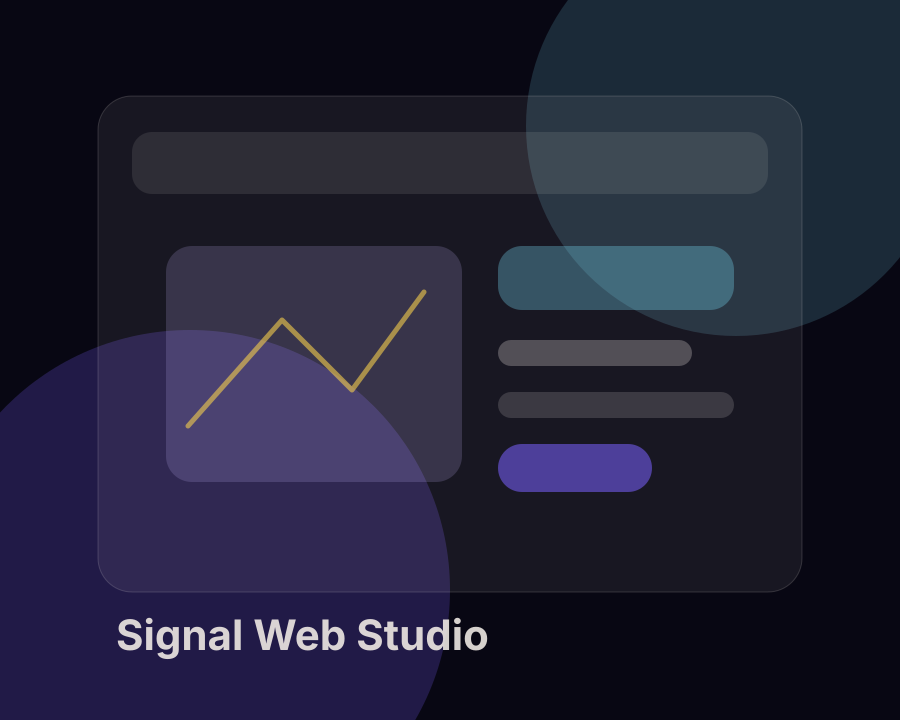

Visual Design
Brand systems, typography, color, editorial rhythm, moodboards, and polished presentation design.
joyceya / multidisciplinary creator
Branding, data analysis, and AI-assisted visual systems for ideas that need to be both understood and felt.
To see and to be seen are both forms of capability.
Explored across
systems and stories
About
I'm Zhou Songyao (JOYCEYA), currently pursuing a Master's degree in Culture and Creative Management at Xi'an Jiaotong-Liverpool University — an integrated marketing professional navigating the intersection of creativity and data.
From content growth to media strategy, and now integrated marketing at Baidu, my career path has always revolved around one belief: drive decisions with data, amplify impact with creativity. I've worked through KOL tiering, viral content replication, and campaign optimization, building a dual-engine approach that balances data insight with creative thinking. Right now, I'm diving deeper into data analysis and AI workflow building — leveraging LLMs to reinvent marketing efficiency. I believe the future of marketing lies at the crossroads of insight × data × AI.
Selected Works

View Case StudyAI visual system
A speculative identity and interface language for AI-assisted insight discovery.

View Case StudyBranding
A modular brand direction system designed for a culture-forward digital studio.

View Case StudyFrontend concept
A polished portfolio and product surface exploring motion, hierarchy, and trust.
Skills / Capabilities
Brand systems, typography, color, editorial rhythm, moodboards, and polished presentation design.
User flows, screen hierarchy, motion intent, micro-interactions, and accessible interface behaviors.
Responsive layouts, component thinking, visual QA, and the judgment to make interfaces feel finished.
Design Process
Gather context, references, audience signals, and project constraints.
Clarify the narrative, success criteria, and visual direction.
Build expressive options through layout, type, color, motion, and systems.
Stress-test details, interaction states, responsiveness, and accessibility.
Package the final experience with clear rationale and next-step readiness.
Contact
Open to portfolio collaborations, brand explorations, AI-assisted creative systems, and digital product concepts.
Let's Work Together